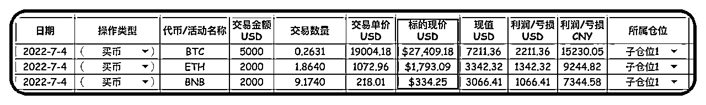
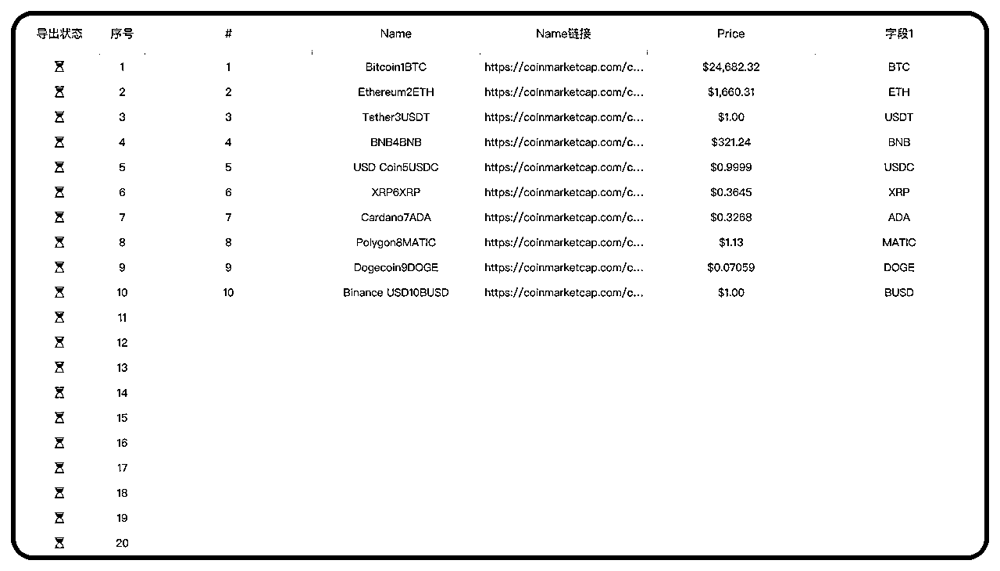
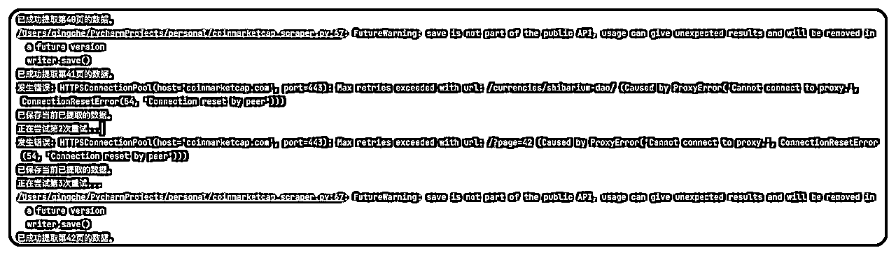
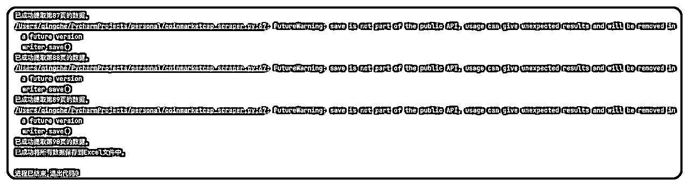

Python小白如何调教ChatGPT写爬虫
来源：https://c5b5kd78s1.feishu.cn/docx/W9bkdxL8Iouy7PxPFBMcSP9qnLh
〇、写在前面
这次前后花了两天半，除了吃喝基本没做其它事情，不停地捣鼓ChatGPT，让它帮我写了一段Python代码，成功爬取到自己想要的数据。
先简单介绍一下自己的Python 水平，懂一点基础元素和 For、IF等常见语句，进阶的基本不懂，自己写基本什么都写不出来那种小白水平。
因此，基于本次实现过程做一个复盘和分享，相信也有情况跟我类似的朋友有此需求，希望能对大家有所启发。
读完这篇文章，至少可以让你学会以下几个技能：
- 如何让ChatGPT帮你写爬虫
- 如何在网页中定位&提取Class的标签和值
- 如何让ChatGPT帮你合并多个表头相同的Excel文件
一、为什么让ChatGPT帮忙写爬虫？
因为个人参与了web3的投资，最近基于谷歌表格，做了一个仓位管理的工具（以下是部分截图）

其中的标的现价，是结合谷歌表格的Importhtml函数自动获取的，代币的数据源https://coinmarketcap.com/网站（下文简称CMC网站），数量9000多个。
为了充分提取这些数据，于是我想到了爬虫，一开始没想着写爬虫的，毕竟市面上有现成的工具，比如某羿采集器，但是研究了大半天，取出来的数据像下图这样，很大一部分都有缺失（多半是我自己的问题）。

之前就得知ChatGPT可以帮忙写代码，我就决定调整思路，尝试“调教”一下。
二、如何调教ChatGPT并实现抓取？
整个实现过程并不是想象中的一帆风顺，远比想象复杂，经过了很多次失败和调试，为了提供更多有效信息，我会把提问过程进行简化，并把整理后的对话文档放到2.2的最后。
2.1 关键信息
整理一下对话的关键信息：
- 对话模型：GPT-4
- 个人需求：采集https://coinmarketcap.com/网站全部的代币名称、简称和二级网址，并保存至Excel文件
- 代码运行环境：Pycharm（另外安装了Anaconda）
2.2 聊天内容
接下来直接进入主题，因为之前我聊的那个版本内容太多太杂（简称V1版），我就重新聊了一次（简称V2版），以下是我重新聊的V2版本中我发送的主要内容（比V1版本更简洁，GTP-4回复内容见2.2附件）
- 你是一名专业Python 的程序员，可以帮我抓取一个网站的数据吗
- 我会发给你一个网址，再告诉你需要爬取的字段信息，你给我代码
- 网址：https://coinmarketcap.com/ ，需要提取的字段：代币名称、代币简称和代币名称的链接，在该网页的第1个代币名称是Bitcoin，其代币简称是BTC；第2个代币名称是Ethereum，其代币简称是ETH；第3个代币名称是Tether，其代币简称是USDT；然后在用户名为qingche的MAC电脑桌面新建一个文件名为new的excel文件（如果有同名的文件先删除），把提取的数据存进去
- 我已经安装了requests, beautifulsoup4和openpyxl库，出现了以下错误代码，先帮我分析再更新代码（错误代码略）
- 我发现有两个问题，1、只获取了后面90个代币名称，前面10个没有获取到，2、代币简称没有任何数据，先帮我分析可能的原因和解决方案，并更新代码
- 为什么执行完没有任何提示
- 我分析了网页结构，代币名称和代币简称的class代码如下：
Bitcoin
，
BTC
，帮我分析并更新全部代码
- 桌面找不到叫new的excel文件
- 提取的数据是我想要的效果，但是只有前10个，这个页面应该有100个代币，帮我分析原因，再更新代码（错误代码略）
- 还是有点问题，我准备调整提取思路，从每个代币的详细页面进行提取，我再次分析了网页结构，代币名称和代币简称的class代码如下：
Bitcoin
BTC，帮我更新全部代码
- 很好，我已经得到一整页我需要的所有数据了，在此基础上，我希望考虑两点优化：1、避免请求频繁；2、尽量模拟真实用户，给我完整代码
- 我需要提取网站中1-91的数据，帮我更新全部代码
- 根据最新的完整代码，总结一下我的需求，要求准确详细，尤其是Class的所有信息（V1版聊天的总结见3.3）
附：V2版聊天（对话）完整过程
三、Prompt梳理
在这部分内容，我会梳理聊天过程中的问题、一些待完善的点和需求总结。
3.1 聊天问题梳理
梳理V1版本的聊天过程中遇到的一系列问题，包括但不限于安装第三方库、如何定位Class元素及提取、Cmc网站设置了诸多反爬机制等，接下来把这些问题做一个梳理：
- 无法安装 Python 库：作为一名标准的小白，一开始在电脑的「终端」里是没安装成功的（应该是目录没对），进一步“调教”GPT之后，通过直接在Pycharm的「终端」才安装成功；
- 无法提取目标信息：一开始只能提取二级网址和代币全名（跟代币名称有所区别），就是取不到我想要的代币名字和代币简称，尝试了很多（无效）的办法，反复试错后才定位到网络结构中 class 元素相关的代码问题；
- 无法定位Class元素：虽然知道了是Class的问题，一开始也是摸不着头脑，多次“调教”GPT和尝试之后，发现Class有两项信息：标签和值，都要求完全准确；在「标签」方面，普通网页里的Class 前面的标签是 div，代码里也默认用这个标签，但提取失败的数据标签是其它的；在「值」方面，也需要多次尝试和确认。（查找的演示视频见3.1最后），这个问题折腾了我3/4的时间；
- 一级页面无法全量获取：正当我以为完结撒花的时候，发现第一页后面的 90 个还是提取不到，这里折腾了很久也没有解决。于是决定先调整思路，尝试每一个二级页面去获取，重新获取有效Class 信息更新代码后，成功获取到想要的信息；
- 无法获取更多页信息：代码在多次运行后，就提示请求频繁了，继续对话后我添加了 sleep 增加 1- 3秒 延迟，还添加了请求头，个人理解相当于指纹浏览器吧，有效伪装，后面还切换了节点（请求频繁的问题最后也没有完全解决）；
- 运行中报错无法保存数据：在尝试让GPT提取前 10 的数据时，在成功提取 6 页数据后（设置了每一页提取成功的提示）又报错提示请求频繁了，已经提取的 6 页数据页没有保存，于是又让GPT每提取一页数据，就在Excel 中新建一个 sheet 进行保存，防止抓取到中间时报错一个数据都没保存。
附：定位Class元素演示视频
简要说明：
- 在Chrome浏览器中，按 F12打开调试模式
- 点击Element，按视频演示一步一步的定位
Ps：我也不知道如何告诉ChatGPT关于Class的有效信息，我就把两个数据的整行Class 都发给他了，再次运行更新后的代码终于可以到我想要的代币名称和简称
3.2 Prompt完善
在我先前聊的V1版本中，在3.1的基础上，还进行了以下几个方面的完善
- 每次抓取数据前随机生成一个请求头，可以进一步降低反爬识别
- 通过每一页数据保存一个Excel 文件，解决报错导致保存的数据无法打开
- 遇到错误（需确认只有请求频繁的问题）自动重新运行程序，并从上一次成功提取的下一页开始提取，重试次数设置为 100，可以实现了一次性完成所需数据的提取，效果图如下


因为按上面提到的第2点进行完善后，会生成90个Excel文件，手动合并这些表格太废手了，新建了一个「Chat」，继续帮我写代码，聊天内容如下：
3.3 需求总结
以下是V1版聊天的需求总结（会比V2演示版的总结得更好）：
您需要爬取CoinMarketCap网站前90页的加密货币数据，包括加密货币的全名、简称和详细页面的URL。这些数据对应的HTML class特征如下：
- 加密货币全名：在加密货币详情页面中，全名对应的HTML标签是，其class特征为"sc-1d5226ca-1"。
- 加密货币简称：在加密货币详情页面中，简称对应的HTML标签是，其class特征为"nameSymbol"。
- 加密货币详情页面URL：在加密货币列表页面中，名称对应的HTML标签是，其class特征为"cmc-link"。详情页面URL可从该标签的href属性中提取，并与网站主域名拼接得到完整的URL。
爬取过程中需遵循以下要求：
- 每爬取一页数据，将其保存到一个Excel文件的单独sheet中，文件保存在桌面上，命名为"new.xlsx"。
- 在爬取过程中，每成功爬取一页数据，输出提示信息，显示已成功提取的页数。
- 在每次请求之前，自动更新User-Agent，使用fake_useragent库生成一个全新的User-Agent，进一步降低请求被限制的可能性。
- 在爬取每个加密货币详细信息前，加入1-3秒的延迟，降低请求频率。
- 如果在爬取过程中出现错误，将已爬取的数据保存到Excel文件中，并输出错误信息及已保存数据的提示。
- 不要使用.append等已经弃用的方法
四、复盘总结
通过这次聊天，除了让我实现了需求外和学会一些新的知识，我认为还有一些值得提炼的内容：
- 实践了最小模型调试思维，先提取某一个元素的几个数据，再2个/3个元素，然后迭代到整页/多页/全部数据
- 代码出错时，最好加上「分析原因」的Prompt，这样有助于提供下一条有效准确的Prompt
- 亲身体验并领教了ChatGPT的厉害，有问题一定不是它的，多在自己身上找问题，也准备把ChatGPT作为个人接下来几年内的重点研究领域
- 虽然最终实现了一段代码一次性提取全部所需数据，遗留了两个问题：如何在一级页面直接进行提取，如何进一步解决请求频繁的问题。
五、写在最后
借这个机会，我想感谢一下生财，在2020年加入时，就通过知乎好物赚到了百倍的门票。这是我加入的第一个真正意义上的付费社群，后面陆续又加各种付费社群~但如果只保留一个，我会毫不犹豫地选择生财。
我进生财马上3年了（换过微信），没发过什么内容，基本都在潜水，也一度因为“忙”很少看帖，但我打心里真的非常喜欢这个社区，社群内容质量高，而且特别认可生财团队的交付水平，这也是我终于愿意写这篇文章的原因，这算是在生财第一次认真的输出，以后也会继续。
前两天已经续费生财，并加入了ChatGPT探索家Club，希望2023继续多赚钱吧~
Ps：如果你也想动起来，需要自己先搞定 Python 和 Pycharm （可以是其他）的安装，也欢迎留言讨论。输出不易，如果内容对你有所帮助，希望获得你的点赞支持，也欢迎大神对代码或思路给予指点，谢谢！(v:qingchejun)
ChatGPT使用攻略之飞书文章合集，欢迎讨论（微信：qingchejun）